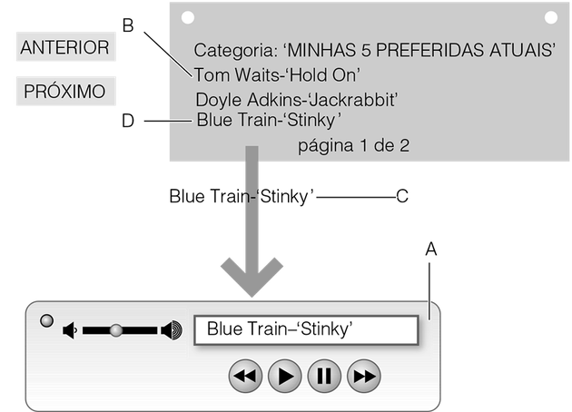

DESIGN CONCEITUAL E FÍSICO
A especificação mínima de um sistema é um modelo conceitual, um conjunto de casos de uso e uma linguagem de design.
O design conceitual preocupa-se em chegar a uma descrição abstrata do sistema - sua lógica, funções, estrutura e conteúdo – mas não com a maneira como a estrutura e as funções serão fisicamente concretizadas.
O design físico preocupa-se com quem faz o quê (com a alocação de funções entre pessoas e artefatos), com a aparência que os artefatos terão e como eles se comportarão.
A distinção entre design físico e conceitual não determina que o design conceitual tenha de estar concluído antes que o design físico comece.
Entretanto, a vantagem do design em nível conceitual, antes de detalhar a forma definitiva do design físico, é evitar o problema de ‘fixação no design’ e manter um amplo espaço no qual as alternativas podem ser consideradas pelo máximo de tempo possível.
DESIGN CONCEITUAL
Um design conceitual claro é fundamental para o desenvolvimento de sistemas que sejam compreensíveis. Os designers precisam garantir que seu conceito de sistema seja facilmente aprendido pelas pessoas e que se encaixe nas suas expectativas e preferências.
Bill Verplank (2007) é um designer de interação que vem desenhando e fazendo design há muitos anos. Ele argumenta que design de interação é “design para uso humano” e se concentra em três pontos principais que caracteriza como:
- como você faz?
- como você sente?
- como você sabe?
“Como você faz?” trata das maneiras como nós afetamos o mundo. Você cutuca, manipula, senta-se nele? Por exemplo, uma distinção que ele destaca é entre cabos e botões. Cabos são melhores para o controle contínuo (por exemplo, a vara de um trombone), mas botões são melhores para o controle descontínuo (por exemplo, o teclado de um piano). Os cabos deixam você no controle (por exemplo, a maçaneta que abre a porta de um carro) enquanto os botões mais provavelmente acionam alguma coisa automática (como o botão que abre a porta de um elevador).
“Como você sente?” refere-se a como damos sentido ao mundo e às qualidades sensoriais que dão forma à mídia. Uma distinção é a de ‘quente’ versus ‘frio’ de Marshall McLuhan.
Ele introduziu a distinção entre ‘meio quente’, que é mais fidedigno e exato, e ‘meio frio’, que é mais impreciso e incompleto.
O meio frio pede mais participação; ele requer que a plateia preencha os vazios, interprete. Os meios quentes expandem um único sentido em alta definição; e eles são cheios de informação. A fotografia é um meio quente devido à sua alta fidelidade, enquanto o ‘cartoon’ é um meio frio de baixa definição, no qual temos de preencher o que falta.
Concentrar-se em “Como você sente?” nos leva às áreas de satisfação, afeto, prazer, participação e envolvimento.
“Como você sabe?” refere-se às maneiras pelas quais as pessoas aprendem e planejam; como o designer quer que as pessoas pensem sobre seu sistema. Por exemplo, Verplank sugere que uma das escolhas é entre mapas e caminhos. Caminhos são bons para principiantes, pois eles fornecem instruções passo a passo sobre o que fazer. Mapas são bons para entender alternativas. Eles são mais demorados para aprender, mas são mais robustos e melhores para os experientes. Os mapas oferecem a chance de se tomar atalhos.
EXPLORANDO O ESPAÇO DE DESIGN
Podemos pensar no design por meio do conceito de um espaço de design. Um espaço de design restringe o design em algumas dimensões enquanto permite a exploração de alternativas em outras.
Designers sempre trabalham dentro de limites, sejam eles financeiros ou funcionais, mas precisam ter cuidado para não impor muitas restrições logo no início do processo.
É nessa circunstância que eles podem ignorar ideias de design devido à fixação no design - decidir-se por uma ideia de design ou por uma limitação de design que impede de explorar possíveis alternativas. Brainstorming é uma boa maneira de expandir o espaço de design.
Em muitos casos será necessário rever os requisitos, o que por sua vez poderá gerar novas análises da situação atual.
METÁFORAS EM DESIGN
Tomar conceitos de um domínio (chamado domínio de origem ou veículo) e aplicá-los em outro (o alvo ou significado) é o que geralmente se chama metáfora.
No desenvolvimento de sistemas interativos estamos constantemente tentando descrever um novo domínio (uma nova aplicação, um design diferente, novos recursos interativos) às pessoas.
Então, temos de usar metáforas para descrever esse novo domínio em termos de algo que seja familiar. Blackwell (2006) faz uma abordagem abrangente do papel da metáfora no design de sistemas interativos. Após algum tempo o uso metafórico de um termo acaba entrincheirado na linguagem, de tal forma que as pessoas esquecem que já foi uma metáfora.
Considerar uma metáfora pode estimular saltos criativos para outras maneiras de pensar.
Metáforas que podem ser úteis para refletir sobre a navegação têm diferentes associações. Uma floresta, por exemplo, é assustadora, confusa, encantadora. Uxm deserto é ameaçador e belo, mas não tem pontos de referência. Metáforas assim podem estimular a criação de um caminho, a apreciação de um cenário e a saída.
Pensar figurativamente é fundamental tanto para o design quanto para o uso de sistemas de computador. Uma das tarefas do designer de interação é criar uma boa metáfora que ajudará as pessoas a aprenderem e a usar o sistema e a entenderem o conteúdo. O design de metáforas funciona da seguinte forma:
- o domínio de origem tem algumas características (conceitos de funções);
- o domínio alvo tem alguns conceitos e características;
- portanto, é importante analisar a relação que existe entre eles;
- características demais no domínio base resultam em ‘bagagem conceitual’ da metáfora;
- características de menos ou características inadequadas demais podem levar à confusão;
- tenha como objetivo as pessoas, produzindo as expectativas adequadas.
O importante na metáfora é conseguir uma boa correspondência conceitual. Às vezes, é adequado levar a metáfora conceitual ao nível de metáfora física, mas nem sempre. Como acontece em qualquer aspecto do design de sistemas interativos, a avaliação da metáfora é essencial.
Existem, no entanto, alguns princípios para um bom design de metáfora.
- Integração – refere-se a fazer com coerência e a não misturar metáforas. O objetivo é manipular toda a combinação, mantendo a teia dos relacionamentos. A combinação tem sua própria estrutura e isso é o que precisa manter a consistência.
- Desagrupamento – as pessoas devem ser capazes de desagrupar a combinação e entender de onde vieram os componentes e por que eles funcionam. É claro que isso frequentemente será uma questão de interpretação. Com consideração, reflexão e avaliação, o designer pode conseguir isso. Designers só devem colocar alguma coisa na combinação por um bom motivo.
- Topologia – os diferentes espaços devem ter uma antropologia similar. Vimos como a estrutura das ondas e dos sulcos tem uma antropologia semelhante, enquanto as ondas e as árvores, não. A topologia refere-se à forma como os conceitos são organizados e estruturados.
- Análise – quando realizar uma análise, o designer deve se concentrar em obter a funcionalidade e os conceitos adequados explorando as ramificações da metáfora e avaliando como ela será interpretada pelas pessoas.
- Design – no nível de design os designers devem considerar como representar objetos e ações. Eles não precisam ser representações visuais realistas (por exemplo, os nomes dos itens nos menus são frequentemente metafóricos).
DESIGN CONCEITUAL USANDO CENÁRIOS
As histórias ajudam no entendimento e os cenários conceituais são abstraídos de histórias para fornecer atividades genéricas. Fixar certas restrições de design leva a cenários concretos que podem acabar sendo especificações funcionais expressas como casos de uso. Um corpus de cenário é desenvolvido e deve ser discutido e avaliado nas reuniões da equipe de design e com a participação dos stakeholders.
Existem graus de concretude no design. As formas mais concretas são usadas para antecipar ou avaliar interações específicas. Embora sejam superficialmente fáceis de construir, há uma série de maneiras nas quais os cenários podem se tornar mais eficazes.
- Complemente os cenários com algumas das técnicas de antecipação mais visuais.
- Em um grande grupo de design, inclua dados e materiais reais para que as pessoas que não estão diretamente envolvidas possam apreciar os detalhes concretos.
- Pense bastante sobre as suposições fundamentais.
- Inclua uma boa caracterização e desenvolva várias personas. Se isso for benfeito, os membros da equipe começarão a falar sobre os personagens - “Se você fizer o design assim, o que vai acontecer quando a avó tentar usar?”.
- Proporcione um background conceitual rico – isso ancora as decisões de design na vida real forçando o designer a pensar sobre praticidade e aceitabilidade.
- Os membros da equipe podem escrever suas próprias versões concretas de um cenário conceitual que reflete suas preocupações particulares. E elas podem ser reunidas, eliminando-se as superposições.
O objetivo é criar uma coleção de cenários que cubra todos os principais usos e aspectos da funcionalidade do produto. Seria impossível escrever cenários para todas as variações possíveis de uso.
Uma boa maneira de fazer design conceitual é realizar uma análise objeto/ação do corpus de cenários. Para cada um dos cenários no corpus o analista deve refletir sobre as descrições do cenário, identificando os vários objetos que são mencionados e as várias ações que são realizadas. Objetos são frequentemente indicados por substantivos ou locuções substantivas, e as atividades e ações, por verbos.
TÉCNICAS DIAGRAMÁTICAS
Designers frequentemente representam o modelo conceitual de um sistema usando uma técnica diagramática como, por exemplo, um modelo entidade-relacionamento ou um modelo de objeto. Modelos de objeto ou modelos entidade-relacionamento representam os principais objetos de interesse em um domínio e as relações entre eles. Há muitos livros dedicados a esses modelos conceituais e às técnicas que podem ser usadas para explorar a estrutura conceitual e não simplesmente documentá-la.
As relações entre os objetos são expressas em termos de quantas instâncias de um objeto podem ser relacionadas a quantas instâncias de outro objeto. Tipicamente não estamos interessados em exatamente quantas instâncias, mas, sim, se uma relação existe entre uma ou mais instâncias. Um modelo conceitual é anotado com ‘1’ se uma instância pode ser relacionada a apenas uma outra instância, ou com ‘m’ se ela pudesse ser relacionada a muitas instâncias.
DESIGN FÍSICO
O design físico cuida da estruturação das interações e sequências lógicas e com a apresentação da alocação de funções e conhecimento entre pessoas e dispositivos.
O design físico tem três componentes:
- o design operacional preocupa-se em especificar como tudo funciona e como o conteúdo é estruturado e armazenado;
- o design representacional preocupa-se em determinar as cores, formas, os tamanhos e o layout da informação. Ele trata do estilo e da estética;
- o design de interação nesse contexto preocupa-se com a alocação das funções para os seres humanos ou para a tecnologia e com a estruturação e o sequenciamento das interações.
Milhões de crianças usam equipamentos projetados para adultos, todos os dias, tanto na escola quanto em casa. No entanto, computadores, teclados e mouses raramente levam em conta o tamanho das crianças e essa é uma grande fonte de problemas.
Um dos riscos é a lesão por esforço repetitivo (LER), principalmente porque os músculos e ossos das crianças ainda estão se desenvolvendo.
LINGUAGENS DE DESIGN
Uma linguagem de design consiste no seguinte:
- um conjunto de elementos de design, como o uso de cor, estilos e tipos de botões, controles deslizantes e outros widgets;
- alguns princípios de composição (ou seja, as regras para usá-los em conjunto);
- grupos de situações qualificadoras - contextos e como eles afetam as regras.
Uma linguagem de design consistente implica que as pessoas precisam apenas aprender um número limitado de elementos para que possam depois lidar com uma grande variedade de situações diferentes. Uma linguagem de design é como os designers dão significado aos objetos, permitindo que as pessoas entendam o que as coisas fazem e façam distinções entre diferentes tipos de objeto.
Rheinfrank e Evenson (1996) ressaltam que as linguagens de design têm mais impacto quando se tornam profundamente incorporadas e quando as pessoas as usam e exploram inconscientemente. Seu método de design inclui desenvolver uma linguagem de design por meio de:
- caracterização - o processo de descrever suposições existentes e quaisquer linguagens de design preexistentes;
- rerregistro - a criação de um novo conjunto de suposições através da exploração de tendências e necessidades por meio de pesquisa de campo;
- desenvolvimento e demonstração - usando storyboards, protótipos e outras técnicas de antecipação;
- avaliação das reações ao design;
- evolução da linguagem com o tempo. Por melhor que seja a qualidade do design, ela só terá determinada duração - até que tenha de ser reanalisada por força das circunstâncias.
Linguagens de design ajudam a garantir a transparência, ajudando pessoas a entender o que está acontecendo dentro de um dispositivo. Elas também permitem a transferabilidade do conhecimento de um dispositivo para outro. O usuário de um telefone Nokia® pode geralmente esperar que outro telefone tenha um design semelhante. Isso também significa que as pessoas verão mais prontamente as oportunidades de usar um dispositivo ou função e terão a expectativa de certos comportamentos, estruturas ou funções.
DESIGN DE INTERAÇÕES
O design de interações é crítico para o design de sistemas interativos. O design conceitual deve ser uma implementação o mais independente possível. A passagem de design conceitual para físico requer que os designers aloquem funções e conhecimento a pessoas ou dispositivos e que, portanto, criem interações.
Por exemplo, no caso do player de MP3, tem de haver ações que selecionem trilhas e que toquem trilhas, que modifiquem as listas de execução ou que carreguem listas de execução. Mas isso não diz quem faz o quê.
No design de interações, ou seja, na alocação de funções a pessoas ou dispositivos, os designers têm de considerar a capacidade das pessoas e as restrições no que elas podem fazer. Pessoas esquecem coisas com o tempo. Elas esquecem coisas da memória de trabalho em muito pouco tempo. Elas não são boas para seguir longas listas de instruções, para desempenhar tarefas tediosas repetidamente e assim por diante. Por outro lado, pessoas são boas para improvisar e para lidar com ambiguidades e informações incompletas. No geral, as capacidades da tecnologia são justamente o inverso.
Mas não se trata apenas de uma questão de eficiência. A interação deve ser envolvente, agradável e gratificante.
PADRÕES DE INTERAÇÃO
A ideia de ‘padrões’ - irregularidades percebidas em um ambiente - foi adotada pelos designers de sistemas interativos e aparece como padrões de interação. Como acontece com os padrões arquitetônicos, os padrões de interação podem ser identificados em muitos níveis diferentes de abstração.
Por exemplo, na maioria dos computadores, se você clicar duas vezes em alguma coisa, ela abre; se clicar com o botão direito do mouse, ela mostrará um menu de operações que você pode realizar.
Os padrões se desenvolvem em interações complexas de menus e mouses com as quais estamos familiarizados: padrões de layout de menus, de destacar quando o mouse passa sobre um item, de piscar quando o item é selecionado e assim por diante. Mais recentemente, as pessoas vêm desenvolvendo padrões de gestos para a interação com dispositivos de exibição multitoque.
Em arquitetura, Christopher Alexander (1979) teve grande influência na introdução da ideia de padrões arquitetônicos. Elas são boas ideias habituais de design. Por exemplo, é uma boa ideia ter pequenos estacionamentos em um bairro, porque grandes estacionamentos são feios e perturbam o bairro.
Cada padrão expressa uma relação entre determinado contexto, determinado sistema de forças que ocorrem repetidamente nesse contexto (ou seja, um problema em particular) e uma solução que permite que essas forças se resolvam por si mesmas. Padrões, portanto, referem-se a outros padrões e fazem parte de padrões maiores.
RESUMO E PONTOS IMPORTANTES
Design conceitual e físico existem no desenvolvimento de qualquer sistema e a modelagem conceitual em particular é uma atividade-chave para os designers. Neste capítulo vimos a importância da modelagem conceitual e a exploração conceitual de espaços de design. Todos os projetos terão de considerar um modelo conceitual e a metáfora fundamental dos sistemas, porque é isso que leva as pessoas a desenvolverem seu próprio modelo conceitual - seu modelo mental - do sistema.
Além de desenvolver o modelo conceitual, destacamos a necessidade do design de interações e de empacotar as ideias de design formando uma linguagem de design.
- Designers precisam completar tanto o design conceitual quanto o design físico.
- Designers precisam entender objetos e ações no sistema proposto existente, analisando o corpus de cenários.
- O design de interação preocupa-se com a alocação de funções a pessoas ou dispositivos e, consequentemente, em chegar a um conjunto de padrões de interação.
- Os designers devem garantir que exista uma linguagem de design consistente em termos tanto dos padrões de interação como dos aspectos representacionais do design.